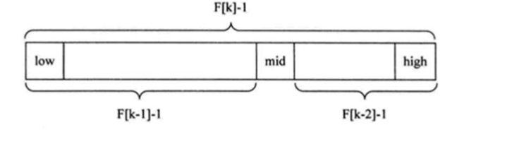

斐波那契(黄金分割法)查找基本介绍:
黄金分割点是指把一条线段分割为两部分，使其中一部分与全长之比等于另一部分与这部分之比。取其前三位
斐波那契数列 {1, 1, 2, 3, 5, 8, 13, 21, 34, 55 } 发现斐波那契数列的两个相邻数 的比例，无限接近 黄金分割值
斐波那契(黄金分割法)原理: 斐波那契查找原理与前两种相似，仅仅改变了中间结点（mid）的位置，mid 不再是中间或插值得到，而是位

对 F(k-1)-1 的理解：
由斐波那契数列 F[k]=F[k-1]+F[k-2] 的性质，可以得到 （F[k]-1）=（F[k-1]-1）+（F[k-2]-1）+1 。该式说明：
类似的，每一子段也可以用相同的方式分割
但顺序表长度 n 不一定刚好等于 F[k]-1，所以需要将原来的顺序表长度 n 增加至 F[k]-1。这里的 k 值只要能使
代码实现 1 2 3 4 5 6 7 8 9 10 11 12 13 14 15 16 17 18 19 20 21 22 23 24 25 26 27 28 29 30 31 32 33 34 35 36 37 38 39 40 41 42 43 44 45 46 47 48 49 50 51 52 53 54 55 56 57 58 59 60 61 62 63 64 65 66 67 68 69 70 71 72 73 74 75 76 77 78 79 public class FibonacciSearch public static int maxSize =20 ; public static void main (String[] args) int arr[] = {1 ,8 ,10 ,89 ,1000 ,1234 }; System.out.println("index=" + fibSearch(arr, 89 )); } public static int [] fib() { int [] f = new int [maxSize]; f[0 ] = 1 ; f[1 ] = 1 ; for (int i = 2 ; i < maxSize; i++) { f[i] = f[i - 1 ] + f[i - 2 ]; } return f; } public static int fibSearch (int [] a,int key) int low = 0 ; int high = a.length-1 ; int k = 0 ; int mid = 0 ; int f[]=fib(); while (high >f[k]-1 ) { k++; } int [] temp = Arrays.copyOf(a, f[k]-1 ); for (int i = high+1 ;i<temp.length;i++){ temp[i] = a[high]; } while (low<=high) { mid = low+f[k-1 ]-1 ; if (key < temp[mid]) { high = mid-1 ; k--; }else if ( key > temp[mid]) { low = mid + 1 ; k-=2 ; }else { if (mid <= high) { return mid; } else { return high; } } } return -1 ; } }